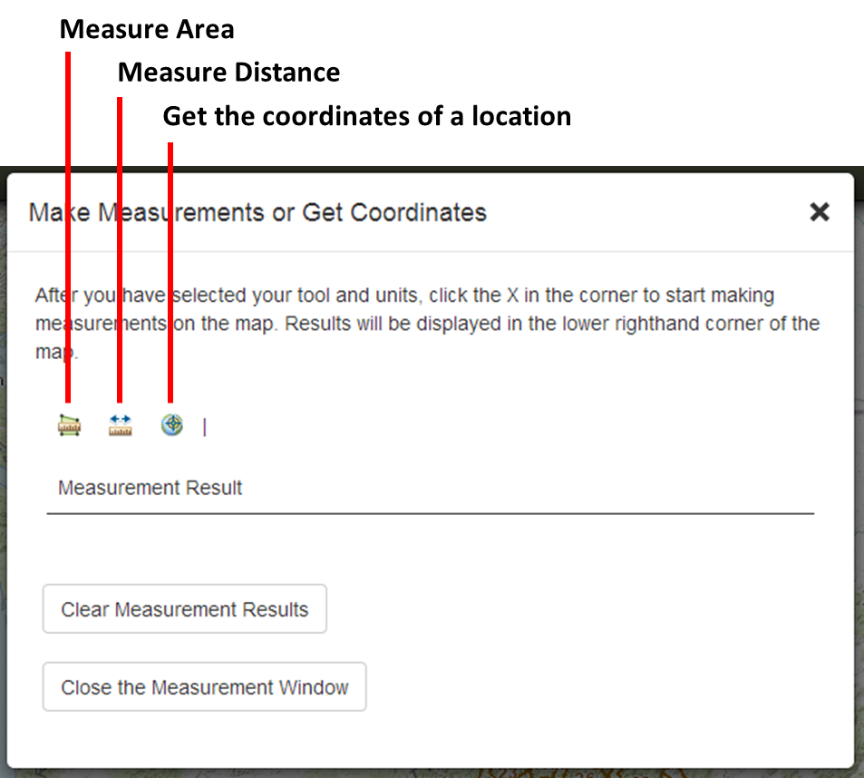
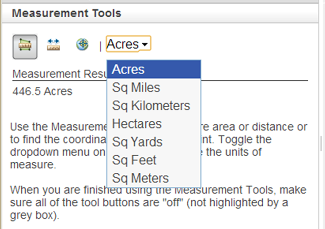
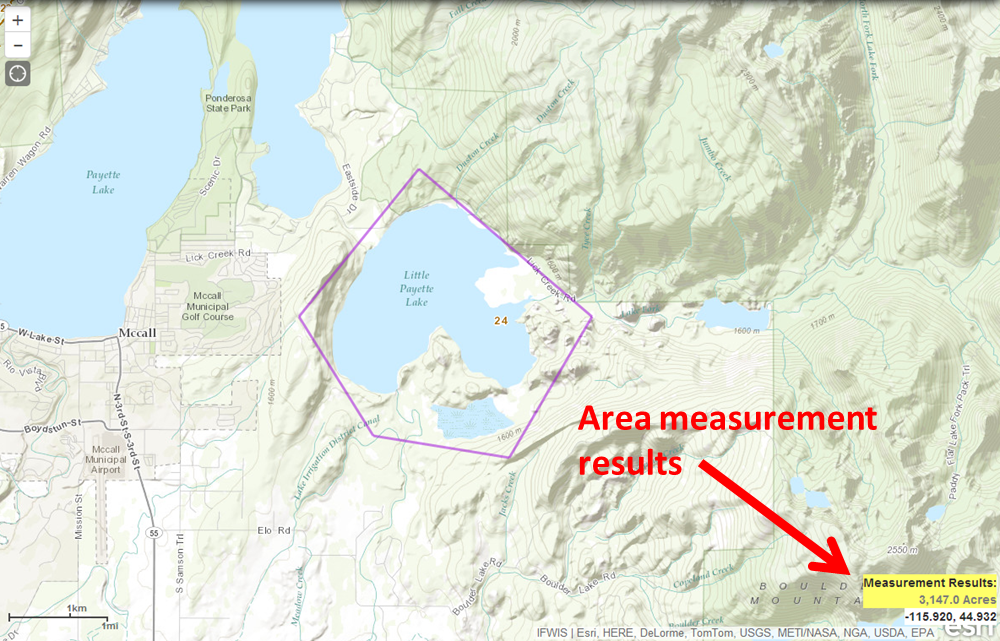
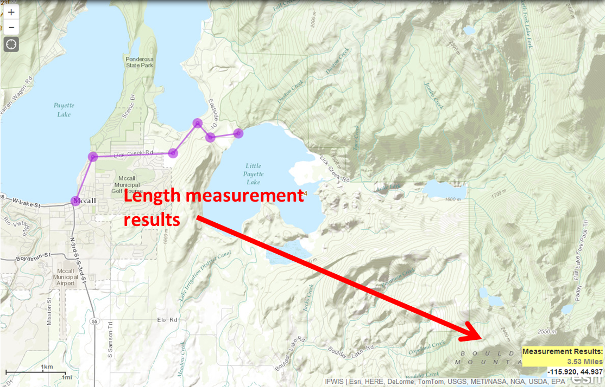
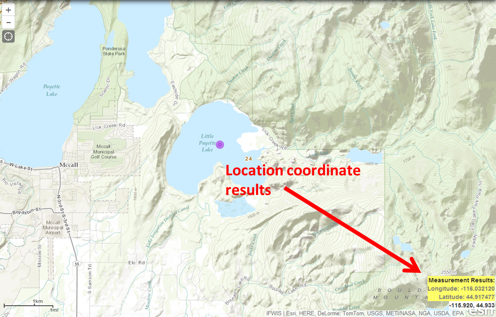

MEASUREMENTS & COORDINATES
The measurement tools allow you to calculate area, distance, or get the longitude, latitude coordinate of a chosen point. This handy widget also allows you to select the units of the results.

To active a measurement tool just click one of the icons. Once a tool is activated, a units selection dropdown list will appear to the right of the icons. After you have selected units, close the window.

To measure area, draw a polygon around your desired area to measure by clicking your mouse at each vertex. When you are done drawing the polygon, double click the mouse on your last vertex. The results will display under 'Measurement Results' in the window and in the lower right corner of the map.

To measure distance, draw a line across your desired distance by clicking your mouse at the start and subsequently clicking your mouse to create vertices along the length of the distance. Double click the mouse on your last vertex to get the results. The results will display under 'Measurement Results' in the window and in the lower right corner of the map.

To get the coordinate of a location, simply click a point on the map. A purple icon will appear the results will display under 'Measurement Results' in the window and in the lower right corner of the map.

Created with the Personal Edition of HelpNDoc: Free EPub and documentation generator